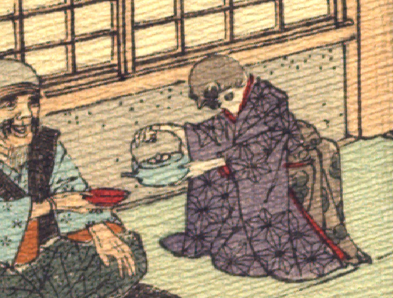

雀。藍色の着物に茶色の帯を着けている。袂が長めなので娘と思われる。袖から出ている腕は人間のものである。膝立ちで座って、両手で銚子を持ち、盃に酒らしきものを注いでいる。
出典：親書誌：U426_nichibunken_0109：Le moineau qui a la langue coupée／日付：2006／資源識別子：U426_nichibunken_0109_0004_0002
Copyright (c)2010- International Research Center for Japanese Studies, Kyoto, Japan. All rights reserved.